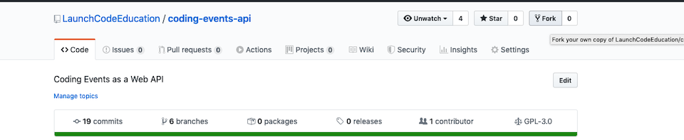
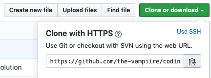

So far you have been writing and running your code on your local machine. This works well for development but in order to host your application on the internet you will need to run it on a remote machine.
Recall that when we publish our application we are creating build artifacts that we can use to run our application. Once we have published the application, we gain the benefit of portability. We can take those build artifacts and run it on any other machine that has the .NET runtime.
In this studio we are going to practice the steps needed to run code on a different machine than where it was written. Each of you will partner with another student to practice cloning, publishing, executing, and connecting to each other’s applications.
The application we will work with is a project we will be building up throughout this class as we introduce new topics. It is a basic REST web API with a SQLite database and a single resource, CodingEvents. The API has endpoints for CRUD operations to manage CodingEvents. In other words, it exposes endpoints for creating, reading (the collection or a single resource), and deleting CodingEvents.
Because web APIs are inherently headless (they do not have a front-end) the project includes a tool called Swagger UI. This is a simple web page that documents the API and allows you to explore the endpoints with a built-in tool for executing requests.
We will cover web APIs, REST, and Swagger in greater detail in a future lesson. So feel free to look over the code but don’t worry if it looks foreign to you! Today the goal is just to practice publishing, executing, and connecting across machines.
We will begin by forking the API repo into our own accounts. This will allow us to make and push changes we make throughout the week.
First go to Coding Events API Repo.
At the top right corner select the Fork option:
Once you have forked the repo you will be sent to the forked version under your GitHub account:

Copy the remote address using the green Clone or download button:
Next, clone the repo on your local machine. Make sure to clone the repo into a location you will remember.
The example below clones it into the ~/coding-projects/azure/coding-events-api file path. If you already have a preferred location feel free to edit the command for that file path instead:
$ git clone https://github.com/<your username>/coding-events-api.git ~/coding-projects/azure/coding-events-api
There are a number of branches that correspond with studios for this class. Today we will be working with the first one, which has the basic version of the API.
Checkout the 1-sqlite branch:
$ git checkout 1-sqlite
Before we get to running our own virtual machine on Azure we need to get comfortable with the basics. Remember that virtual machines don’t have a graphical interface like your IDE. There won’t be a shiny green play button in the cloud to run your application. In fact, there won’t even be a mouse pointer!
We will simulate what it’s like to run our application in the cloud by going through similar steps locally from the command line. First on your own machine, and then by swapping with your partner to publish and run each other’s code.
Note
Before continuing, make sure you have the tools you need. If you do not have the Linux subsystem set up with the dotnet CLI tool refer to Walkthrough: Set Up Linux & Bash With WSL.
There are multiple ways to publish your project and even more to customize how it is packaged. In this course we will focus on the self-contained strategy with options to build a single executable project file. Rather than using our IDE, we will use the dotnet CLI tool to get comfortable working from the command line.
First, navigate to your cloned repo (solution) directory. In the cloning example above, the path to that directory was ~/coding-projects/azure/coding-events-api:
$ cd ~/coding-projects/azure/coding-events-api
From within the solution directory, run the following command to publish your first release:
$ dotnet publish -c Release
This will publish to CodingEventsAPI/bin/Release/netcoreapp3.1/linux-x64/publish/
Notice that it automatically published as a self-contained, single (executable) file, built to execute on the linux-x64 runtime. These defaults are set in the CodingEventsAPI/CodingEventsAPI.csproj configuration file by the following attributes:
<?xml version="1.0" encoding="utf-8"?>
<Project Sdk="Microsoft.NET.Sdk.Web">
<PropertyGroup>
<SelfContained>true</SelfContained>
<PublishSingleFile>true</PublishSingleFile>
<RuntimeIdentifier>linux-x64</RuntimeIdentifier>
These defaults are the equivalent of running the publish command with the following options:
$ dotnet publish -c Release -r linux-x64 -p:PublishSingleFile=true
Tip
If you change the -r option to a different RID value you can build for other runtimes as needed, while still using the defaults for the other options.
Within the CodingEventsAPI/bin/Release/netcoreapp3.1/linux-x64/publish/ directory is the single executable file CodingEventsAPI. All you need to do to run it is execute that file.
$ ./CodingEventsAPI/bin/Release/netcoreapp3.1/linux-x64/publish/CodingEventsAPI
Now you can navigate to https://localhost:5001 and view the Swagger API documentation.